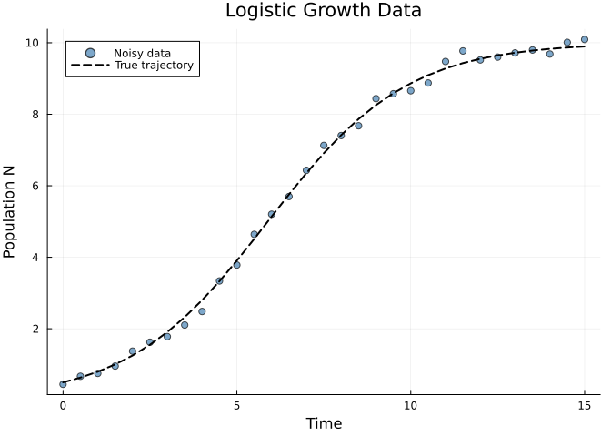
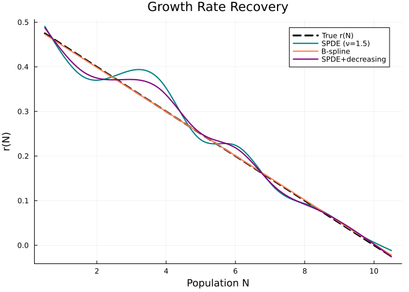
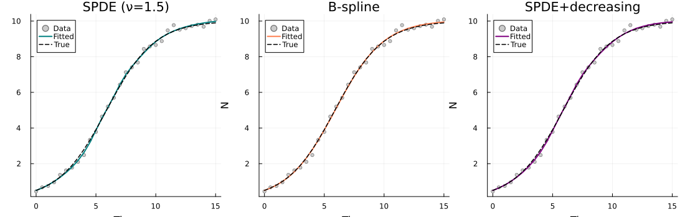
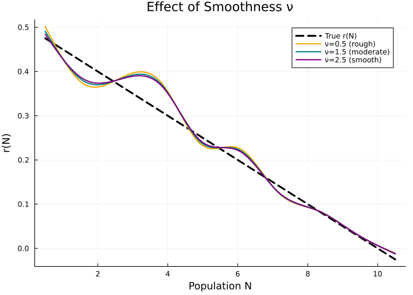
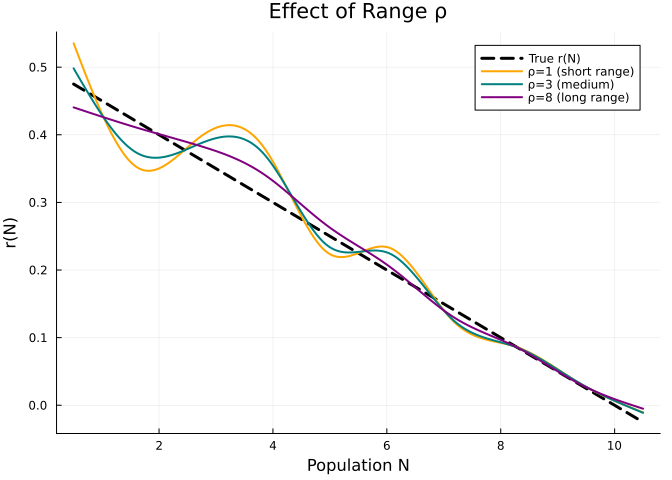
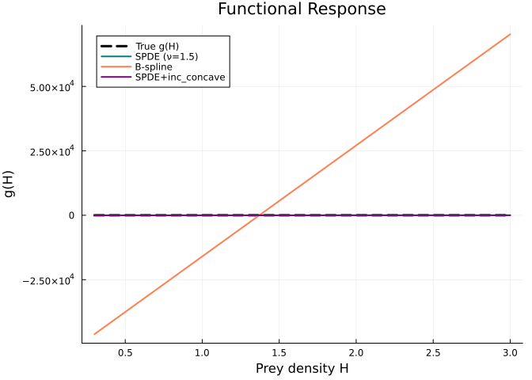
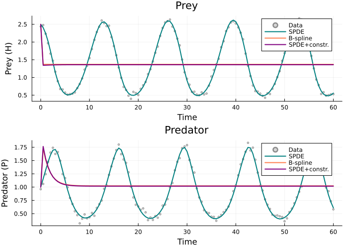
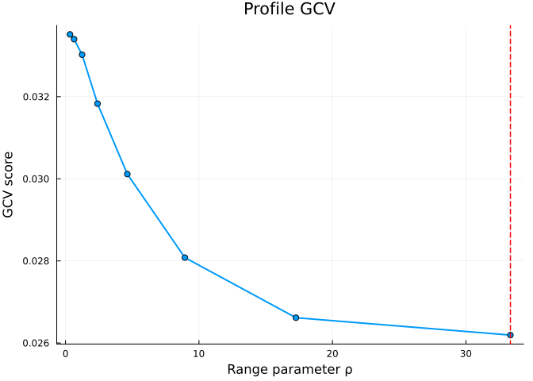
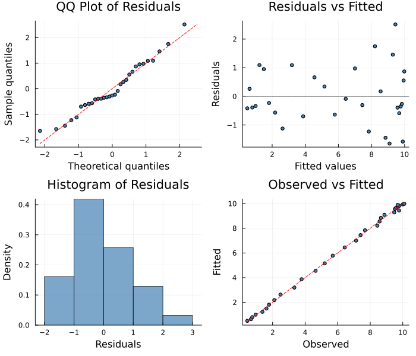

Matérn SPDE Approximator
Overview
The SPDEApproximator represents unknown functions using a Matérn SPDE penalty derived from the stochastic partial differential equation (Lindgren et al. 2011):
\[(\kappa^2 - \Delta)^{\alpha/2} \, \tau \, u(x) = \mathcal{W}(x)\]
where $\mathcal{W}$ is Gaussian white noise. This gives a smoothing penalty equivalent to placing a Matérn Gaussian process prior on the unknown function, but computed via sparse finite element matrices rather than dense covariance matrices.
The key parameters are:
- Smoothness $\nu$: controls differentiability ($\nu = 0.5$: rough, $\nu = 1.5$: moderate, $\nu = 2.5$: smooth)
- Range $\rho = \sqrt{8\nu}/\kappa$: the correlation length — how far apart inputs must be before function values become approximately uncorrelated
Unlike the B-spline penalty ($\int f''(x)^2 \, dx$), the Matérn SPDE penalty has a physically interpretable range parameter and offers control over smoothness class.
using PartiallySpecifiedModels
using OrdinaryDiffEq
using Plots; default(fmt=:png)
using Random
Random.seed!(42)TaskLocalRNG()Logistic Growth with Unknown Growth Rate
We fit a logistic growth model where the per-capita growth rate $r(N)$ is unknown:
\[\frac{dN}{dt} = r(N) \cdot N\]
The true growth rate is $r(N) = r_0(1 - N/K)$ with $r_0 = 0.5$ and $K = 10$.
r_true(N) = 0.5 * (1.0 - N / 10.0)
function logistic!(du, u, p, t)
du[1] = p.r(u[1]) * u[1]
end
sol_true = solve(ODEProblem(logistic!, [0.5], (0.0, 15.0), (; r=r_true)),
Tsit5(); saveat=0.5)
t_data = collect(sol_true.t)
data_clean = [sol_true.u[i][1] for i in 1:length(t_data)]
data_noisy = max.(data_clean .+ 0.15 * randn(length(t_data)), 0.01)
data_matrix = reshape(data_noisy, :, 1);Observed Data

Figure 1: Simulated logistic growth data
Fitting with SPDE vs B-Spline
We compare the SPDE approximator (Matérn 3/2 penalty) against the standard B-spline approximator (integrated squared second derivative penalty), and a shape-constrained SPDE with a :decreasing constraint — since we know the per-capita growth rate must decrease with population size.
uf_spde = SPDEApproximator(:r, (0.5, 10.5), 10; nu=1.5, initial=x -> 0.3)
uf_bspline = BSplineApproximator(:r, (0.5, 10.5), 10; initial=x -> 0.3)
uf_scspde = ShapeConstrainedSPDEApproximator(:r, (0.5, 10.5), 10, :decreasing;
nu=1.5, initial=x -> 0.3)
prob_spde = PSMProblem(logistic!, [0.5], (0.0, 15.0), [uf_spde];
data_times=t_data, data_values=data_matrix,
obs_to_state=[1], known_params=NamedTuple(),
likelihood=PartiallySpecifiedModels.Gaussian())
prob_bspline = PSMProblem(logistic!, [0.5], (0.0, 15.0), [uf_bspline];
data_times=t_data, data_values=data_matrix,
obs_to_state=[1], known_params=NamedTuple(),
likelihood=PartiallySpecifiedModels.Gaussian())
prob_scspde = PSMProblem(logistic!, [0.5], (0.0, 15.0), [uf_scspde];
data_times=t_data, data_values=data_matrix,
obs_to_state=[1], known_params=NamedTuple(),
likelihood=PartiallySpecifiedModels.Gaussian())
sol_spde = solve(prob_spde, LAML(maxiters=100, verbose=false));
sol_bspline = solve(prob_bspline, LAML(maxiters=100, verbose=false));
sol_scspde = solve(prob_scspde, LAML(maxiters=100, verbose=false));Recovered Growth Rate

Figure 2: Recovered r(N): SPDE vs B-spline vs constrained SPDE
Fitted Trajectories

Figure 3: Fitted trajectories: SPDE vs B-spline vs constrained SPDE
Effect of Smoothness Parameter $\nu$
The Matérn smoothness $\nu$ controls the differentiability of the fitted function. Lower values give rougher fits; higher values give smoother fits.
sols = Dict{Float64, Any}()
for ν in [0.5, 1.5, 2.5]
uf = SPDEApproximator(:r, (0.5, 10.5), 10; nu=ν, initial=x -> 0.3)
prob = PSMProblem(logistic!, [0.5], (0.0, 15.0), [uf];
data_times=t_data, data_values=data_matrix,
obs_to_state=[1], known_params=NamedTuple(),
likelihood=PartiallySpecifiedModels.Gaussian())
sols[ν] = solve(prob, LAML(maxiters=100, verbose=false))
end
Figure 4: Effect of Matérn smoothness ν on recovered growth rate
Effect of Range Parameter $\rho$
The range parameter $\rho$ controls the correlation length. Smaller ranges allow more local variation; larger ranges enforce longer-range smoothness.
domain_width = 10.0
sols_range = Dict{Float64, Any}()
for ρ in [1.0, 3.0, 8.0]
uf = SPDEApproximator(:r, (0.5, 10.5), 10; nu=1.5, range_param=ρ, initial=x -> 0.3)
prob = PSMProblem(logistic!, [0.5], (0.0, 15.0), [uf];
data_times=t_data, data_values=data_matrix,
obs_to_state=[1], known_params=NamedTuple(),
likelihood=PartiallySpecifiedModels.Gaussian())
sols_range[ρ] = solve(prob, LAML(maxiters=100, verbose=false))
end
Figure 5: Effect of range parameter ρ on recovered growth rate
Lotka-Volterra with SPDE
The SPDE approximator also works in multi-variable systems. Here we fit a Rosenzweig-MacArthur predator-prey model with an unknown Holling Type II functional response. The parameters are chosen to produce sustained limit-cycle oscillations (H*/K ≈ 0.25, past the Hopf bifurcation), so that prey density H spans a range from ~0.5 to ~2.6 — providing good coverage for identifying g(H).
g_true(H) = H / (1.0 + 0.5 * H)
function lv!(du, u, p, t)
H, P = u
du[1] = 0.8 * H * (1.0 - H / 5.0) - p.g(H) * P
du[2] = 0.9 * p.g(H) * P - 0.7 * P
end
sol_lv = solve(ODEProblem(lv!, [2.5, 1.0], (0.0, 60.0), (; g=g_true)),
Tsit5(); saveat=0.5)
t_lv = collect(sol_lv.t)
data_H = [sol_lv.u[i][1] + 0.05 * randn() for i in 1:length(t_lv)]
data_P = [sol_lv.u[i][2] + 0.05 * randn() for i in 1:length(t_lv)]
data_lv = hcat(max.(data_H, 0.01), max.(data_P, 0.01));uf_lv_spde = SPDEApproximator(:g, (0.3, 3.0), 10; nu=1.5, initial=x -> 0.3)
uf_lv_bspline = BSplineApproximator(:g, (0.3, 3.0), 10; initial=x -> 0.3)
uf_lv_scspde = ShapeConstrainedSPDEApproximator(:g, (0.3, 3.0), 10, :inc_concave;
nu=1.5, initial=x -> 0.2)
prob_lv_spde = PSMProblem(lv!, [2.5, 1.0], (0.0, 60.0), [uf_lv_spde];
data_times=t_lv, data_values=Float64.(data_lv),
obs_to_state=[1, 2], known_params=NamedTuple(),
likelihood=PartiallySpecifiedModels.Gaussian())
prob_lv_bspline = PSMProblem(lv!, [2.5, 1.0], (0.0, 60.0), [uf_lv_bspline];
data_times=t_lv, data_values=Float64.(data_lv),
obs_to_state=[1, 2], known_params=NamedTuple(),
likelihood=PartiallySpecifiedModels.Gaussian())
prob_lv_scspde = PSMProblem(lv!, [2.5, 1.0], (0.0, 60.0), [uf_lv_scspde];
data_times=t_lv, data_values=Float64.(data_lv),
obs_to_state=[1, 2], known_params=NamedTuple(),
likelihood=PartiallySpecifiedModels.Gaussian())
sol_lv_spde = solve(prob_lv_spde, LAML(maxiters=100, verbose=false));
sol_lv_bspline = solve(prob_lv_bspline, LAML(maxiters=100, verbose=false, initial_lambda=0.1));
sol_lv_scspde = solve(prob_lv_scspde, LAML(maxiters=100, verbose=false));Functional Response Recovery

Figure 6: Recovered functional response g(H): SPDE vs B-spline vs constrained SPDE
Fitted Trajectories

Figure 7: Fitted Lotka-Volterra trajectories
Comparison Table
| Approximator | Data Loss | Objective |
|---|---|---|
| SPDE (ν=1.5) | 0.5116 | 0.3504 |
| SPDE+decreasing | 0.5335 | 0.3479 |
| B-spline | 0.6663 | 0.3331 |
| SPDE (ν=0.5) | 0.5058 | 0.3506 |
| SPDE (ν=1.5) | 0.5116 | 0.3504 |
| SPDE (ν=2.5) | 0.5161 | 0.3508 |
| SPDE+inc_concave (LV) | 95.0989 | 47.7465 |
| SPDE unconstrained (LV) | 0.5480 | 0.2848 |
| B-spline (LV) | 94.9691 | -579655649682011.0000 |
Profile Range Optimization
The SPDE range parameter $\rho$ controls the Matérn correlation length and is fixed by default at $1/3$ of the domain width. We can optimize it via profile GCV — running LAML for a grid of $\rho$ values and selecting the one with the lowest Generalized Cross-Validation score.
result = optimize_spde_range(prob_spde, LAML(maxiters=100, verbose=false);
n_grid=8, verbose=true) range= 0.333 (×0.10): GCV=0.0335, loss=0.4941, edf=9.6
range= 0.644 (×0.19): GCV=0.0334, loss=0.4943, edf=9.6
range= 1.243 (×0.37): GCV=0.0330, loss=0.4954, edf=9.4
range= 2.399 (×0.72): GCV=0.0318, loss=0.5010, edf=8.9
range= 4.632 (×1.39): GCV=0.0301, loss=0.5304, edf=7.6
range= 8.942 (×2.68): GCV=0.0281, loss=0.5673, edf=6.0
range=17.265 (×5.18): GCV=0.0266, loss=0.5836, edf=4.9
range=33.333 (×10.00): GCV=0.0262, loss=0.5901, edf=4.6
Best range=33.333, GCV=0.0262
(solution = PSMSolution((r = [0.4310553489055179, 0.41714879270588767, 0.384991072893859, 0.3352030351117984, 0.2696584614846853, 0.20196155096589818, 0.13629226873238448, 0.08368554997848027, 0.030017328007111328, 0.004412626011826592]), 0.3460921957730508, 0.5900881374811003, 4.5724033767094125, [32.602978404711344], [0.5; 0.6200963602816946; … ; 9.97645911495859; 10.041196837825746;;], [0.4454963777822334; 0.6707835637706556; … ; 10.011521386502283; 10.092491865779015;;], [0.0, 0.5, 1.0, 1.5, 2.0, 2.5, 3.0, 3.5, 4.0, 4.5 … 10.5, 11.0, 11.5, 12.0, 12.5, 13.0, 13.5, 14.0, 14.5, 15.0], Dict{Symbol, Any}(:r => DataInterpolations.CubicSpline{Vector{Float64}, Vector{Float64}, Vector{Float64}, Vector{Float64}, Vector{Float64}, Vector{Float64}, Float64}([0.4310553489055179, 0.41714879270588767, 0.384991072893859, 0.3352030351117984, 0.2696584614846853, 0.20196155096589818, 0.13629226873238448, 0.08368554997848027, 0.030017328007111328, 0.004412626011826592], [0.5, 1.6111111111111112, 2.7222222222222223, 3.8333333333333335, 4.944444444444445, 6.055555555555555, 7.166666666666667, 8.277777777777779, 9.38888888888889, 10.5], Float64[], DataInterpolations.CubicSplineParameterCache{Vector{Float64}}(Float64[], Float64[]), [0.0, 1.1111111111111112, 1.1111111111111112, 1.1111111111111112, 1.1111111111111112, 1.1111111111111107, 1.1111111111111116, 1.1111111111111116, 1.1111111111111107, 1.1111111111111107], [0.0, -0.01904848456405266, -0.01250671690004597, -0.016607993170118473, 0.0023619253735647793, -0.0033000656176766334, 0.020692610563570805, -0.015986318125704505, 0.038093756302368456, 0.0], DataInterpolations.ExtrapolationType.Linear, DataInterpolations.ExtrapolationType.Linear, FindFirstFunctions.Guesser{Vector{Float64}}([0.5, 1.6111111111111112, 2.7222222222222223, 3.8333333333333335, 4.944444444444445, 6.055555555555555, 7.166666666666667, 8.277777777777779, 9.38888888888889, 10.5], Base.RefValue{Int64}(1), true), false, false)), (V_beta = [0.009493588029902002 -0.0002158971438394344 … -9.759123603712354e-6 -5.3129104461644756e-6; -0.0002158971438394344 0.0031534195430302104 … 1.2506280393723698e-6 -5.513223828403602e-6; … ; -9.759123603712354e-6 1.2506280393723698e-6 … 0.00043513025447246566 -0.0007547910526052014; -5.3129104461644756e-6 -5.513223828403602e-6 … -0.0007547910526052014 0.007720898440337978], sigma2 = 0.022328482831505642, converged = true, iterations = 16, reason = :converged_tol, laml_failures = 0, criterion = :working, laml = 45.36904654739028, stationarity = 5.434752530408815e-6, smoothing_advanced = true)), range_param = 33.33333333333334, gcv_scores = [0.033519211762354124, 0.03340257370914121, 0.03302452797805888, 0.03183056352746019, 0.030115223412462165, 0.028079911641566348, 0.026614835571716785, 0.02619167295624058], range_values = [0.3333333333333334, 0.6435659096277502, 1.2425312401049804, 2.398952243337174, 4.63165164791046, 8.942319317599088, 17.264915597437376, 33.33333333333334])
Figure 8: Profile GCV over SPDE range parameter
The optimized range parameter is $\rho = 33\.33$ with data loss 0.5901 (vs 0.5116 for the default range).
Diagnostic Plots
A standard 4-panel diagnostic display assesses residual behaviour. The QQ plot checks normality of standardized residuals, “Residuals vs Fitted” detects systematic patterns, the histogram visualises the residual distribution, and “Observed vs Fitted” checks overall calibration.
using PartiallySpecifiedModels: appraise
diag = appraise(sol_spde)
p_qq = scatter(diag.qq_theoretical, diag.qq_sample,
xlabel="Theoretical quantiles", ylabel="Sample quantiles",
title="QQ Plot of Residuals", ms=3, legend=false, color=:steelblue)
mn, mx = extrema(vcat(diag.qq_theoretical, diag.qq_sample))
plot!(p_qq, [mn, mx], [mn, mx], color=:red, ls=:dash, label="")
p_rf = scatter(diag.fitted, diag.residuals,
xlabel="Fitted values", ylabel="Residuals",
title="Residuals vs Fitted", ms=3, legend=false, color=:steelblue)
hline!(p_rf, [0], color=:gray, ls=:dot)
p_hist = histogram(diag.residuals, normalize=:pdf,
xlabel="Residuals", ylabel="Density",
title="Histogram of Residuals", legend=false, color=:steelblue, alpha=0.7)
p_of = scatter(diag.observed, diag.fitted,
xlabel="Observed", ylabel="Fitted",
title="Observed vs Fitted", ms=3, legend=false, color=:steelblue)
mn2, mx2 = extrema(vcat(diag.observed, diag.fitted))
plot!(p_of, [mn2, mx2], [mn2, mx2], color=:red, ls=:dash, label="")
plot(p_qq, p_rf, p_hist, p_of, layout=(2, 2), size=(700, 600))
Durbin-Watson: 1.978When to Use SPDEApproximator
Advantages over B-splines:
- Interpretable range parameter: $\rho$ has a direct physical meaning as the correlation length
- Smoothness control: $\nu$ controls differentiability separately from the smoothing parameter
- Principled prior: Equivalent to a Matérn GP prior, connecting to spatial statistics theory
- Sparse FEM penalty: Tridiagonal matrices in 1D — efficient for large basis dimensions
Shape-constrained variant (ShapeConstrainedSPDEApproximator):
When the unknown function has known qualitative properties (e.g., a Holling Type II response is increasing), use ShapeConstrainedSPDEApproximator with the appropriate constraint (:increasing, :decreasing, etc.). Simpler constraints like :increasing or :decreasing tend to converge more reliably than combined constraints like :inc_concave, which can trap the optimizer. Constraints are enforced at mesh nodes, and they hold at the nodes only: the cubic-spline interpolant between nodes has cardinal functions that take negative values, so the fitted function can violate the constraint between nodes — and the violation is material rather than slight (a :positive fixture whose 10 node values are all positive, alternating ≈5 / ≈0.007, dips to −0.121). Adding mesh nodes does not cure this; more nodes help only indirectly, by letting the fitted node values vary more smoothly relative to the spacing. Audit a fitted result with check_constraints, and use ShapeConstrainedBSplineApproximator when the constraint must hold everywhere — its B-spline convex-hull property makes all 14 constraints exact.
When to prefer B-splines:
- Simpler setup (no range or smoothness parameters to choose)
- Well-established theory for penalized regression splines (Wood 2017)
- Slightly lower computational overhead for small problems
Parameter guidelines:
nu=1.5(Matérn 3/2) is a good default — once differentiable, matching most ecological responses- Set
range_paramto roughly the scale over which you expect the unknown function to vary, or useoptimize_spde_rangeto select it automatically via profile GCV - The overall smoothing strength (τ²) is still estimated automatically via LAML/GCV
References
- Lindgren, F., Rue, H. & Lindström, J. (2011). An explicit link between Gaussian fields and Gaussian Markov random fields: the stochastic partial differential equation approach. JRSS-B, 73(4), 423–498.
- Miller, D.L., Glennie, R. & Seaton, A.E. (2020). Understanding the stochastic partial differential equation approach to smoothing. JABES.
- Wood, S.N. (2017). Generalized Additive Models: An Introduction with R. 2nd ed. CRC Press.